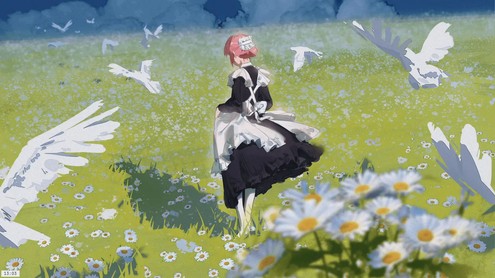

Almost a week ago from the time of writing, I switched to bspwm, a small but powerful window manager.
I showed it to my friends, and the reaction was somewhat mixed. This was mainly due to the fact that the only module visible is the time, although I plan to change it to show the current desktop I am on. I like this design, especially considering that most designs, or 'rices' as some call them on major forums such as unixporn, typically feature contrasting colors and many modules that some people, like me, don't need for daily use. In return, people have said that my design is 'minimalistic.' This is common for me, if you've seen my customizations—and even the landing page for this website! But I feel like minimalism today has become increasingly abstract, and I wanted to take a moment to define what it is and why I appreciate it so much.
In my opinion, the main goal of minimalism is to convey the most important information with the least amount of visual context. Let's break this down: minimalism is supposed to use elements clearly and effectively. This could mean a lot of things—does it mean the website has to be blunt? No. In other words, the goal of most minimalist designs is to inspire intrigue or a sense of agency from the viewer, even though it might appear non-discernible at first glance. Based on this principle, let’s look at the classic example of minimalism: Warming Stripes > by Ed Hawkins. As I mentioned, minimalism is meant to evoke an emotion from the viewer, without spoon-feeding them or adding unnecessary details. The progression from blue—a color often associated with calm and life— to a violent red creates a sense of urgency regarding climate change. But at first glance, it simply looks like lines. This reinforces the idea of conveying a wealth of information in a way that remains visually simple.
I chose minimalist design because it is the best way to give a distinct identity to your media. Unlike abstract art, which can be unintelligible and rife with conflicting interpretations, minimalism focuses on one key element and builds around it to the best of its ability. It conveys professionalism and fairness more effectively than other designs, which rely on multiple elements being just right for the design to work. It feels as if you only need to focus on one key element, giving it emotional depth and encouraging the viewer to interact with it. With the internet offering a variety of design philosophies, minimalism feels like the most stable and comforting. It doesn't require constant tinkering to be effective—it simply works, embodying the idea of "if it ain't broke, don’t fix it." For me, minimalism provides a sense of calm, as the lack of distractions allows me to focus on the main content.
So, how does one apply minimalism across various forms of media? It boils down to one key principle: "less is better." Focus on what the media needs, and hide non-essential elements in an accessible space. Allow each element to breathe and maintain a consistent color palette. Typography is also important: if you're using serif fonts, stick to serif. If you're using sans-serif, use sans-serif fonts throughout. The fonts should be able to complement each other, while still having their own space. Every element must have purpose, and each color should balance with the overall design.
I must mention that there are some drawbacks to minimalism. Some websites, such as news sites, may struggle with minimalist designs. News needs to be placed in prominent areas where people will actually click on it, making true minimalism nearly impossible. Similarly, sites that rely on user-generated content, such as images and text, cannot fully embrace minimalism since moderating every single image to fit a set of strict art rules is practically impossible. So, it's important to keep this in mind.
I will leave you with a quote from Antoine de Saint-Exupéry, a French aviator, poet, and writer: "Perfection is achieved, not when there is nothing more to add, but when there is nothing left to take away."